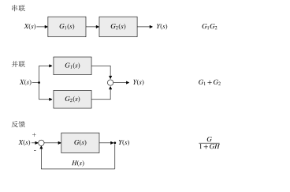
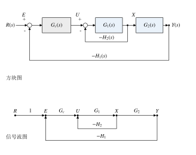
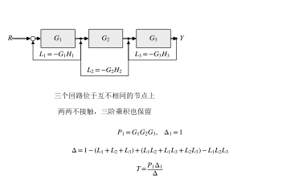
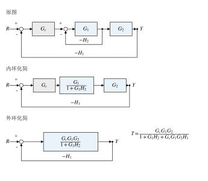
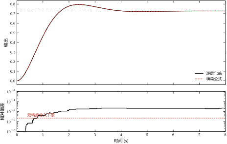

第 1 章把单个对象压缩成 G(s)，但现场几乎没有“单个对象”这回事。一个典型的串级回路至少有四块：外环控制器、内环控制器（或内环反馈）、对象的前后两段、检测环节。把这些方块按信号流向连起来，就得到一张方块图；从图上求“参考输入到被控输出”的传递函数，是设计控制器之前必须完成的一步。
先看一个具体系统。外环控制器 G_c=2，对象拆成两段 G_1=1/(s+1) 与 G_2=1/(s+0.5)；内环从 G_1 的输出取反馈 H_2=0.5，外环从系统输出取反馈 H_1=1，两处都按负反馈接入。令 R 为参考、E=R-H_1Y 为外环偏差、U=G_cE-H_2X 为内环偏差（即 G_1 的输入）、X=G_1U、Y=G_2X，把这五句话写成方程就是
\begin{cases} E=R-H_1Y\\ U=G_cE-H_2X\\ X=G_1U\\ Y=G_2X \end{cases} \tag{2-1}
三种算法都能解出 Y/R，但代价完全不同。
第一种，代数消元。从下往上代：Y=G_2G_1U，U=G_c(R-H_1Y)-H_2G_1U，整理得 U(1+G_1H_2)=G_c(R-H_1Y)，再代回 Y 的表达式。四行方程、三次代入，中间任何一步符号写错，后面全错，而且写错时结果仍然“长得像个传递函数”，不容易发现。
第二种，方块图逐层化简。把内环看成一个整体，其等效传递函数是 G_1/(1+G_1H_2)；外环再按单回路公式合成。这个方法每一步都有明确的图形含义，适合讲解，也适合手算小系统；但每化简一层就要重画一张图，回路多、交叉多时容易把反馈接错位置。
第三种，梅森增益公式。先在图上数出两个回路、一条前向通路，再写一个分母，一步得到结果：
T(s)=\frac{G_cG_1G_2}{1+G_1H_2+G_cG_1G_2H_1} \tag{2-2}
代入数值，T(s)=2/(s^2+2s+2.75)，与逐层化简的结果一致，本章脚本在 200 个频率点上比较两者的最大相对偏差是 5.94\times10^{-16}，属于双精度舍入量级。三条路径殊途同归，差别只在“出错概率”和“可解释性”。
现场拿到一张控制框图，第一件事通常不是算传递函数，而是回答三个问题：哪个回路是外环、哪个是内环；扰动从哪个节点进入；有没有前馈支路。这三个问题决定了后面所有的设计动作。
外环与内环的分工是固定的：内环响应快、行程短，负责压制进入内环的扰动和对象非线性；外环响应慢、行程长，负责跟踪设定值。图上看，内环一定包住更少的方块、跨过更短的路径。若一张图上两个回路的包络几乎重合，说明设计上分工不清，运行时两个回路会互相抢动作。
扰动进入的位置决定抑制手段。扰动加在对象输入端，反馈要等它走完整个对象才看得见，抑制靠高增益；扰动加在测量通道，反馈会把它当成真实偏差去追，越追越偏，这类扰动只能靠滤波或差分测量解决。前馈支路则一定从扰动或参考处“抄近路”直接送到执行器，不经过反馈的比较点。
算传递函数只是读图的最后一步。读不出结构，算得再准也没用；反过来，读懂了结构，传递函数的形式基本可以猜出来——分母一定是 1 加上各回路增益，分子一定是各前向通路的组合。
工业现场的原始图纸通常不是方块图，而是管道与仪表流程图（P&ID）。从 P&ID 到方块图要做一次“去物理化”：把管道、阀门、换热器这些设备抽象成方块，把 4–20 mA 信号线抽象成带箭头的信号线，把变送器与控制器之间的接线关系抽象成反馈支路。设备的本体特性进入方块，信号的流向进入连线，两件事必须分开处理，否则画出来的图会同时包含工艺物料流与仪表信号流，无法计算。
转换时先回答三个问题：操纵变量是哪一个、主要扰动从哪里进入、反馈取自哪个测点。这三个答案决定了图的骨架，其余细节都是往骨架上挂方块。操纵变量通常是调节阀的开度，扰动可能是入口流量、入口温度或环境温度，反馈测点则是被控量的变送器位置。三个问题答错一个，整张图的回路结构就会错。
还要注意控制器的“正反作用”。P&ID 上通常用字母标注，方块图上则体现为求和点的符号：反作用控制器对应负反馈，正作用对应正反馈。现场把正反作用设反，等价于把反馈符号写反，闭环极点立刻跑到右半平面，这是投运时最常见的低级故障之一。图上符号与控制器设置必须逐条对应，不能只凭“应该是负反馈”的直觉。
梅森公式常被当成“背公式套图”的技巧，这个印象低估了它。它真正省掉的是消元过程中的重复劳动：系统结构不变、只改某一个方块的参数时，逐层化简要把整条链重算一遍，梅森公式只需要改对应回路的那一项。
更重要的是它给出了结果的结构。单回路时，分母是 1+G H，这个“1+ 开环增益”的形式直接解释了为什么增大增益能减小稳态误差、也解释了为什么增益过大时会振荡。多回路时，分母是 1 减去所有回路增益之和、加上互不接触回路的乘积，每一项都对应图上的一圈闭合路径。看到分母里有几项，就知道图上有几条回路、哪几条互不相交，这比看一个展开后的高阶多项式有用得多。
公式还解释了分子为什么常常“缺项”。前向通路只有一条时，分子就是那一条通路的增益；有两条时，分子是两条通路各自乘上余子式再相加。前馈之所以能“抵消”某些动态，本质就是第二条通路在分子上引入了一个可以配置的项。
本章的一句话核心是：把结构信息（谁连谁）与代数运算（信号怎么消）分开，结构用图表示，代数用梅森公式一次算完。
路线如下。§2.2 定义方块图与信号流图的元素，给出三种基本连接和两类移动规则；§2.3 从节点方程推出梅森公式，并用三个算例走完整流程；§2.4 讨论离散系统里多出来的采样开关与保持器，以及如何用代码自动枚举回路；§2.5 说明读图在串级、前馈、扰动三种场景下的用法和公式失效的边界；§2.6 用三条独立路径互证本章所有结论；§2.7 收束成十条常见错误与十问自测。
需要提前说明的是，本章只处理线性定常、单输入单输出、方块之间无负载效应的系统。饱和、死区、滞环一旦进入回路，方块图就不再等价于线性方程，梅森公式也就失效——这条边界在 §2.5.4 展开。
方块图只用四种图形元素，但每一种都带着一条容易被忽略的假设。
方块表示一个单输入单输出的环节：输入 u(t) 经脉冲响应 g(t) 卷积成输出 y(t)，在 s 域就是 Y(s)=G(s)U(s)。方块里写传递函数，不写元件名——同一个方块可以是一个阀门、一段管路，也可以是一整台设备。这里藏着第一条假设：方块之间没有负载效应，即后级不从前级抽取能量，前级的 G(s) 不会因为接了后级而改变。这条假设在第 3 章会化成状态空间的单向连接，在电路里对应“后级输入阻抗无穷大”。一旦负载效应显著（两个 RC 环节直接串接就是典型），必须把两级合并成一个方块重新建模，否则串联公式给出的结果会偏离实际。
信号线是带箭头的实线，箭头表示因果方向，不表示功率流向。线上任意一点的量都是时间的函数，标 X(s) 表示该点信号的拉氏变换。信号线不允许双向，也不允许分叉后不画引出点——分叉必须画实心点，这不是作图洁癖，而是提醒读者此处取的是同一个信号。
求和点画成小圆，进入的支路各标 + 或 -。符号必须与方程严格一致：图上写 -，方程里就必须是减号。手算时最常见的错源就是“图上看的是负反馈，写方程时按正反馈代入”，结果闭环极点整体跑到右半平面，却还以为自己算的是稳定系统。求和点的多个输入按线性叠加，先后次序不影响结果，这一点在 §2.2.5 合并同类点时会用到。
引出点是实心圆点，表示同一信号被送往多处。引出不改变信号、不衰减、不隔离：从同一点引出的两条支路拿到的是完全相同的量。实际实现时这条理想假设常常不成立（传感器带载能力有限、D/A 通道数有限），工程上要用隔离放大器或分配器补上，但图上仍按理想引出处理，否则图就没法算了。
四类元素与物理系统之间没有一一对应关系，这是方块图能跨领域使用的原因。电气系统里，一个 RC 低通是一个方块，输入电压是信号，输出电压是信号，后级的输入阻抗决定“无负载效应”是否成立；机械系统里，质量-弹簧-阻尼环节同样是一个方块，力是输入、位移是输出；热工系统里，换热器常常被抽象成一阶加纯滞后，蒸汽流量是输入、出口温度是输出。三种系统的物理量完全不同，方块图却完全一样，因为方块只记录“输出等于输入乘一个传递函数”这一条代数关系。
跨领域借用也带来一个必须补上的动作：量纲检查不能在图上做，只能回到物理量。同一个图上，G_1 的增益可能是 V/V，也可能是 K/(kg/s)，相乘时数值上没问题，物理上却可能把温度当成了电压。所以建模时要单独维护一张“方块—物理量—单位”的对照表，图上只写符号 G_1，表里写清楚输入输出的单位。这一步在多专业协作的项目里尤其重要，交接图纸时最容易丢的就是单位。
四个元素合起来只能表达“信号乘一个传递函数、若干信号相加减”，因此方块图的表达能力严格等于线性定常代数方程组。它画不出饱和、画不出切换、也画不出能量回流，这三类问题要换工具（第 8 章的非线性环节描述函数、第 96 章的混杂系统建模）。
任何一张无交叉的方块图，都能由三种连接逐层化简，如图 2-1。

串联是信号依次通过两个方块，中间的引出点只观测不取用：
Y(s)=G_2(s)G_1(s)U(s) \tag{2-3}
乘法可交换，所以 G_1G_2=G_2G_1，顺序在传递函数意义上可以随意调换。但物理上不可交换：饱和环节在前、小增益环节在后，饱和造成的波形畸变会被完整保留；反过来把大增益放在前面，本来没到限幅的信号被放大到饱和，两者输出完全不同。线性范围内可交换、线性范围外不可交换，这是“方块图只对线性系统成立”的第一个具体体现。
并联是同一信号分成两路，各自经过一个方块后相加：
Y(s)=\bigl[G_1(s)+G_2(s)\bigr]U(s) \tag{2-4}
两条通路互不影响，输出直接叠加。并联会引入零极点相消：若 G_2=-G_1，输出恒为零，但两个方块内部的状态仍在运动。这个“传递函数为零、内部并不平静”的现象，第 5 章会用能控性与能观性正面解释，此处只需记住：化简后的传递函数不携带全部内部信息。
反馈是把输出经 H(s) 送回输入端，与参考相减：
\frac{Y(s)}{X(s)}=\frac{G(s)}{1+G(s)H(s)} \tag{2-5}
负反馈的分母是 1+GH，闭环极点由 1+G(s)H(s)=0 决定，这个方程就是第 4 章根轨迹的出发点。H=1 时称为单位反馈，实际系统里最常见，因为传感器增益通常可以归一化到 1。正反馈时分母变成 1-GH，极点整体右移，一般不用，但在振荡器与锁相环里有明确用途。
判断是不是反馈，只看一点：H 的引出点必须在 G 的输出侧。如果 H 从 G 的输入侧引出，那它是并联或前馈，不是反馈；图上两种画法只差一个引出点的位置，代数结果却差一个 G，这是手算时第二常见的错源。
信号流图把方块图的“方块”与“求和点”全部去掉，只留两样东西：节点表示信号，支路表示增益。图 2-2 是同一个双回路系统的两种画法。

对应关系一眼可见。上半张图的五个信号 R,E,U,X,Y 变成下半张图的五个节点；两个求和点并入 E、U 两个节点，节点值等于所有汇入支路的贡献之和；反馈增益 -H_1、-H_2 直接写在线旁。方块图里作为图形元素的“+/-”，在流图里退化成支路增益的一个符号，符号只出现在一个地方，这正是流图适合机械计算的原因。
代价是失去物理直观。方块图上一眼能看出哪块是被控对象、哪块是检测环节；流图上所有节点长得一样，只能靠命名区分。所以工程交流仍用方块图，手工计算与编程枚举用信号流图，两者是同一系统的两套记号，随时可以互译。互译规则只有三条：方块变成增益为 G 的支路；求和点变成一个节点，符号并入入支路增益；引出点变成一个节点，几条出支路共用该节点。
互译时有两条容易忽略的约定。第一，两条信号线交叉但交叉处没有实心点，表示不相连；只有画了实心点才是电气或信号上的连接。手绘图上这一点经常被省略，读图时必须按“无点不连”处理，否则会把两条独立通路误读成一个回路。第二，单位增益支路可以省略不画，例如参考输入直接送入比较点时，那条增益为 1 的支路常常被省掉；但在流图上省略后，输入节点到比较点之间就没有边了，枚举前向通路时会漏掉整条路径。所以用程序枚举时，宁可把单位支路显式写出来，也不要依赖“默认连接”。
流图的三个术语在 §2.3 直接进入公式，这里先定义清楚：
注意“最多经过一次”这个限制。同一条路径上重复经过某个节点，说明信号绕了一圈又回来，那已经不是前向通路，而是回路与前向通路的组合，梅森公式用余子式 \Delta_k 处理这种情形，不需要把重复路径单独列出来。
图与矩阵是一一对应的。给节点编号 1,\dots,n，令 W_{ij} 为从 i 到 j 的支路增益，就得到一个 n\times n 矩阵。矩阵的稀疏模式就是图的拓扑：非零元的位置是边，零元的位置是没有连接。回路对应矩阵的循环置换，\Delta 就是 \det(\boldsymbol{I}-\boldsymbol{W})，前向通路对应从输入行到输出列的路径。画图与写矩阵是同一件事的两种表示，这也是第 3 章能把方块图翻译成状态方程的基础。
用矩阵表示有一个直接好处：可以借助现成的线性代数工具检查图。矩阵的秩告诉你有没有冗余节点，特征值告诉你回路的稳定性，条件数告诉你数值求解是否可靠。手工画图看不出这些问题，写成矩阵一算就出来了。
坏处是矩阵丢掉了“哪条边是反馈、哪条是前馈”的语义。矩阵里所有非零元长得一样，反馈的负号只体现为数值的正负。所以设计与调试阶段仍然要看图，矩阵适合计算与验证，两者配合使用。
实际图上经常出现交叉：反馈线从某个方块上方跨过，比较点排在引出点之前，回路层层套叠而不是层层嵌套。这时候直接套三种连接会把回路接错，必须先移动点位，把图整理成可逐层化简的形状。
移动规则共四条，成对出现，全部是恒等变形。设信号顺向通过增益为 G 的方块，x 为输入、y=Gx 为输出。
比较点后移（顺信号方向，从 G 前移到 G 后）：
G\,(x_1-x_2)=Gx_1-Gx_2 \tag{2-6}
原来在 G 前相减，现在在 G 后相减。代价是：除主路外，其余每一条输入支路都要串一个 G。
比较点前移（逆信号方向，从 G 后移到 G 前）：
Gx_1-x_2=G\left(x_1-\frac{x_2}{G}\right) \tag{2-7}
代价是：除主路外，其余输入支路各串一个 1/G。
引出点后移（顺信号方向，从 G 的输入侧移到输出侧）：原来引的是 x，现在引到的是 y=Gx，要在引出支路上串 1/G 才能还原 x。
引出点前移（逆信号方向，从输出侧移到输入侧）：原来引的是 y，现在引到 x=y/G，要在引出支路上串 G。
一句话记法：比较点关心“是不是每个输入都要乘上 G”，引出点关心“取到的信号要不要还原”。方向搞反时，补偿环节的 G 与 1/G 也就跟着反，这是移动规则唯一需要死记的地方。
规则的正确性可以直接数值验证。本章脚本把比较点从 G 前移到 G 后、其余输入支路串 G，在 200 个频率点上比较移动前后的传递函数，最大相对偏差 3.33\times10^{-16}；把引出点从输出侧移到输入侧、支路串 G，偏差为 0（两条计算路径的浮点运算次序完全相同）。这说明移动是恒等变形而非近似，偏差只来自舍入。
四条规则经常要组合使用，顺序会影响补偿环节的数量。经验做法是先移动跨接方块最多的那条支路，让补偿环节集中在一处；若先处理短支路，后面还要再串一次，容易漏乘。移动完成后必须重新数一遍回路数与前向通路数，与移动前对比：拓扑等价时两者必须完全相同。数量变了，说明移动时跨过了求和点，或者把没有实心点的交叉当成了连接。这个复核只花一分钟，却能挡住后面所有的连锁错误。
移动有一条硬边界：只能跨过线性方块，不能跨过求和点，也不能跨过非线性环节。跨过求和点会改变“谁和谁相减”，跨过限幅会改变中间变量的幅值——移动后传递函数可能仍然相同，但饱和发生的位置已经变了，实际响应不会一致。所以移动规则是“算传递函数”的工具，不是“改电路”的工具。
拿到一张待化简的图，按下面五步走，比凭直觉逐块消要稳。
最常见的错误发生在第 3 步：移动比较点时忘了给另一条输入支路串 G，化简后的分母就少了一项。这种错误不会报错，现象是“响应形状对、时间常数不对”，闭环极点位置偏了一点，靠看曲线很难反查。所以宁可多画一张图，也不要在脑子里做移动。
这套流程适用于十来个方块以内的图。超过二十个方块，手工化简的出错概率已经高于收益，应该直接列边表、交给脚本枚举。手工的价值在于建立直觉，不在于处理大规模系统；先把小图算到能预测结果，再用脚本处理大图，这个顺序不能颠倒。
还有一个次序问题：先化简还是先移动，取决于图上有没有交叉。无交叉时先化简，能减少后续工作量；有交叉时先移动，否则化简会把回路接错。判断方法是看反馈线的引出点是否在它所跨过的方块的输出侧——不在，就有交叉，必须先移动再化简。
手工算错，多数不是算错，而是“图到方程”这一步转错了。按下面五步走，每一步都有可检查的产物。
第一步，定节点。给每个方块输出、每个求和点输出、每个引出点命名。方块输出与紧接其后的引出点是同一个信号，可以共用一个节点；求和点的输出必须单独命名，因为它与任何输入都不相等。节点命名的粒度决定了矩阵的阶数：把不该分的信号分成两个节点，会多出一对增益为 1 的支路，结果不变但图变复杂；把该分的信号合并，则会直接丢掉一个方程。
第二步，定支路。对每条信号线写一个三元组（起点、终点、增益），反馈的负号并入增益写成 -H，不要留在方程外面。写完做一次计数：支路数应当等于方块数加反馈线数加单位传输线数。若对不上，说明漏画或重复画了某条线。
第三步，写节点方程。对每个节点写“本节点等于所有入支路贡献之和，加上外部直接注入量”。这一步只做机械替换，不做任何代数整理；整理留到第四步，否则容易在移项时丢符号。
第四步，组装矩阵。把所有方程整理成 (\boldsymbol{I}-\boldsymbol{W})\boldsymbol{x}=\boldsymbol{b}。约定行对应终点、列对应起点，则 \boldsymbol{W} 的第 j 行第 i 列就是“从 i 到 j”的增益。方向写反是这一步最典型的错误，症状是传递函数算出来“分子分母互换”或者量纲不对。检查办法：\boldsymbol{W} 的非零元个数必须等于支路数，位置与图上的箭头一一对应。
第五步，抽查。令 s=0 算直流增益，与物理直觉比对：单位负反馈、前向通路直流增益为 K 时，闭环直流增益应当是 K/(1+K)，必须小于 1 且随 K 单调上升。再令某条反馈支路增益为零，结果应当退化为开环传递函数。两项抽查都通过，才说明图与方程确实对上了。
这五步的价值在于把“读图”变成可复核的流程。现场常见的“传递函数算出来不对劲”，用第五步的两个极限检查，通常几分钟内就能定位到是符号错、方向错还是漏支路。
至此，图形语言已经齐备：元素、三种连接、两类移动规则。但逐层化简仍然依赖“看出层次”，图一复杂就得反复试。下一节把这套图形语言翻译成一组可以直接数出来的量——前向通路、回路、不接触回路——用一个公式一次算完。
梅森公式不是凭经验凑出来的，它是节点方程组克莱姆法则展开后的图形化表述。把流图上第 j 个节点写成“汇入之和”：
X_j=\sum_{i=1}^{n} W_{ij}X_i+b_j,\qquad j=1,2,\dots,n \tag{2-8}
其中 W_{ij} 是从节点 i 到节点 j 的支路增益（没有支路则为零），b_j 是外部输入直接注入该节点的量。写成矩阵形式就是
(\boldsymbol{I}-\boldsymbol{W})\,\boldsymbol{x}=\boldsymbol{b} \tag{2-9}
对式 (2-9) 用克莱姆法则，输出节点 y 的解是
X_y=\frac{\det(\boldsymbol{I}-\boldsymbol{W})_y}{\det(\boldsymbol{I}-\boldsymbol{W})} \tag{2-10}
分母是一个 n 阶行列式，分子是把第 y 列换成 \boldsymbol{b} 之后的同行列式。梅森公式的全部内容，就是这两个行列式的图形化展开。理解这一点很关键：公式的适用范围、失效条件、以及为什么分子会出现余子式，都能从式 (2-10) 直接读出来，而不需要另记一套规则。
克莱姆法则有一个前提：\det(\boldsymbol{I}-\boldsymbol{W})\neq 0。这个前提在物理上不是自动满足的。若图上存在一条完全由纯增益构成的闭合路径，矩阵可能出现奇异，方程没有唯一解，对应“信号在一瞬间自己循环放大”的代数环。实际系统总有惯性或延时，不可能瞬时循环，所以代数环出现时，正确的反应不是换一种解法，而是回到图上看哪个环节漏画了动态。
对稳定系统，s=j\omega 时 \Delta(j\omega) 恒不为零。反过来，若某个频率使 \Delta(j\omega)=0，该频率就是闭环极点所在，系统处于临界稳定或振荡。这个判断在频域分析里会反复用到：\Delta 的零点位置决定稳定性，\Delta 在虚轴上的取值决定频响。分母不只用来通分，它还携带全部稳定性信息。
行列式按排列展开：
\det(\boldsymbol{I}-\boldsymbol{W})=\sum_{\pi}\operatorname{sgn}(\pi)\prod_{j=1}^{n}(\boldsymbol{I}-\boldsymbol{W})_{j,\pi(j)} \tag{2-11}
每一项乘积中，第 j 个因子要么取 1（当 \pi(j)=j），要么取 -W_{j,\pi(j)}（当 \pi(j)\neq j，即沿一条支路走一步）。于是一个排列对应图上的一组“走法”：某些节点原地不动，其余节点沿着支路首尾相接。
排列必然分解成若干个互不相交的循环。每个长度不小于 2 的循环，恰好是图上的一个回路；循环之间没有公共节点，恰好对应“互不接触的回路”。若某个节点有自回路（支路从自己指向自己），它对应长度为 1 的循环，贡献一个 -L，形式与其它回路一致。
再看符号。含 m 个非不动点、分成 r 个循环的排列，符号是 (-1)^{m-r}；而每个长度为 l 的循环贡献 (-1)^{l-1}，各循环相乘正好是 (-1)^{\sum(l-1)}=(-1)^{m-r}。因此一个回路贡献一个负号，k 条互不接触的回路贡献 (-1)^k。把同类项归并，就得到
\Delta=1-\sum_i L_i+\sum_{i,j}L_iL_j-\sum_{i,j,k}L_iL_jL_k+\cdots \tag{2-12}
式中求和号下的每一组回路都必须两两不接触，这就是“\Delta 里不能出现接触回路乘积”的来源。它不是人为规定，而是行列式展开中不可能出现“共用节点”的循环组合。
式 (2-12) 的项数随回路数增长得很快。n 条互不接触的回路，展开项数是 2^n；三节独立回路时是 1+3+3+1=8 项，本章脚本枚举出的有效项却是 5 项——因为其中两对回路共用了节点，对应的乘积在图上不存在。
分子的行列式是把第 y 列换成 \boldsymbol{b} 得到的。\boldsymbol{b} 只有一个非零元（输入节点），按该列展开后，剩下的行列式等于从 \det(\boldsymbol{I}-\boldsymbol{W}) 中删去前向通路所经过的那些行与列。
删行删列，等价于把与前向通路有公共节点的回路全部剔除，只保留与这条通路完全不接触的回路。剩下的行列式按式 (2-12) 展开，就是余子式
\Delta_k=1-\sum_i L_i'+\sum_{i,j}L_i'L_j'-\cdots \tag{2-13}
其中 L_i' 只取与第 k 条前向通路不接触的回路。把它与前面的 \Delta 合并，得到梅森增益公式
T(s)=\frac{\sum_{k}P_k\Delta_k}{\Delta} \tag{2-14}
到这里可以回答一个常见疑问：为什么单回路系统的分子常常就是前向通路增益？因为唯一的回路与通路接触，\Delta_1=1，分子退化成 P_1。为什么前馈系统分子会出现两项相加？因为有两条前向通路，各自带一个余子式。分子的项数等于前向通路的条数，分母的项数等于回路的组合数，这两句话在看图时比公式本身更好用。
用式 (2-14) 复算 §2.1 的双回路系统，验证公式与逐层化简一致。
图上两条回路：外环 L_1=G_cG_1G_2(-H_1)，内环 L_2=G_1(-H_2)。两条回路都经过 G_1 的输出节点，互相接触，所以 \Delta 只有三项：
\Delta=1-L_1-L_2=1+\frac{2}{(s+1)(s+0.5)}+\frac{0.5}{s+1} \tag{2-15}
前向通路只有一条 R\to E\to U\to X\to Y，增益 P_1=G_cG_1G_2=2/[(s+1)(s+0.5)]，它与两条回路都接触，\Delta_1=1。通分后
T(s)=\frac{2}{s^2+2s+2.75} \tag{2-16}
与式 (2-2) 和逐层化简的结果完全一致。这个例子的价值在于演示“接触”的判断：两条回路共享 G_1 的输出，所以不能写成 L_1L_2 项。若误加这一项，分母会多出 1/[(s+1)^2(s+0.5)]，闭环极点位置偏移，阶跃响应的振荡频率随之改变。
图 2-3 是三个单回路串接的系统，每个方块各带自己的反馈：G_1=1/(s+1)、H_1=1；G_2=1/(s+2)、H_2=2；G_3=1/(s+3)、H_3=0.5。

三条回路分别是 L_1=-G_1H_1、L_2=-G_2H_2、L_3=-G_3H_3。它们占用的节点集合是 \{A,B\}、\{B,C\}、\{C,D\}：第一与第二共享 B，第二与第三共享 C，只有第一与第三不接触。于是
\Delta=1-(L_1+L_2+L_3)+L_1L_3 =1+\frac{1}{s+1}+\frac{2}{s+2}+\frac{0.5}{s+3}+\frac{0.5}{(s+1)(s+3)} \tag{2-17}
前向通路只有一条，经过全部节点，与三条回路都接触，\Delta_1=1，P_1=G_1G_2G_3。通分：
T(s)=\frac{1}{s^3+9.5s^2+26s+20} \tag{2-18}
分母的三次项系数为 1、二次项系数为 9.5，正好是三个时间常数与三个反馈增益交叉组合的结果；常数项 20 等于三个回路直流增益之积的某种组合，可以直接用来做量纲与符号的快速核对。脚本给出的最大相对误差是 1.14\times10^{-15}。
这个例子说明 \Delta 的项数不能靠“回路数”猜。三条回路看起来应该出现三阶乘积，但因为节点首尾相连，三阶项一条都不存在，二阶项也只剩一对。
接触关系由连线决定，不由“级数”决定。上例中第一与第三不接触，是因为它们分别占用 \{A,B\} 与 \{C,D\}。若把第三级的反馈送回点从 C 挪到 B（跨过第二级），第三条回路就变成 \{B,C,D\}，与第一条在 B 处相交，唯一的不接触对消失，\Delta 从五项退回四项。改一个反馈的送回位置，改的不是一个增益，而是整个结构，必须重新枚举，不能沿用原来的公式。
再看一种更彻底的变化：去掉三级各自的反馈，只保留一条从 D 到 A 的总反馈。图上只剩一条回路，\Delta 只有两项，但前向通路仍经过三个方块，分母的阶次仍是三。回路数与阶次不是一回事：回路决定分母的项数，动态环节的个数决定分母的阶次，两者可以完全不对应。这一点在 §2.3.8 还会用到。
前馈补偿的结构是：控制器 G_c=3 与对象 G=1/(s+1) 构成单位负反馈回路，另有一条前馈支路 G_f=1 把参考直接送到对象输入端。
回路只有一条，L_1=G_cG(-H)=-3/(s+1)，故 \Delta=1+3/(s+1)=(s+4)/(s+1)。
前向通路有两条：P_1=G_cG=3/(s+1) 经 E 节点，P_2=G_fG=1/(s+1) 绕过 E。两条都经过 U、Y，与唯一回路接触，\Delta_1=\Delta_2=1。代入式 (2-14)：
T(s)=\frac{\dfrac{3}{s+1}+\dfrac{1}{s+1}}{\dfrac{s+4}{s+1}}=\frac{4}{s+4} \tag{2-19}
结果是一个一阶惯性环节，时间常数 0.25 s，而原闭环是 3/(s+4)、时间常数同为 0.25 s，但直流增益从 0.75 提到 1。前馈支路没有改变闭环极点，只改变了分子——这正是“前馈改零点、反馈改极点”的代数根据：前馈增加一条前向通路，只影响分子；反馈改变回路，只影响分母。这条结论在 §2.5.2 会用于解释前馈为什么能消除跟踪误差而不影响稳定性。
前馈按取信号的位置分两种。取自参考的称为参考前馈，改变的是 T_{RY} 的分子，用于提高跟踪；取自扰动的称为扰动前馈，改变的是 T_{DY} 的分子，用于抑制可测扰动。两者在图上只差引出点的位置：参考前馈从 R 引出，扰动前馈从 D 引出，都送到执行器前的求和点。功能上互不替代，工程上常常同时配置——换热器既用蒸汽压力前馈压制压力波动，又用设定值前馈加快升降温。
判断一个前馈支路属于哪一种，有个直接办法：把输入从 R 换成 D，若这条支路仍出现在前向通路里，它就是扰动前馈；若消失了，它就是参考前馈。这条检验比看图可靠，因为两种画法常常只差一个箭头。一个前馈支路只对它取信号的那个输入负责，这是 §2.5.3 那条结论的另一面。
梅森公式的推导只用到式 (2-9)，因此它的适用条件与节点方程完全一致：
四条之中，前两条最容易被忽视。现场调试时“按梅森公式算出来是稳定的，实际却振荡”，八成是把某个饱和环节当成了线性增益。公式本身没有错，是建模时越过了它的边界。
还有一条不在四条之列、却直接影响计算结果的条件：数值条件。式 (2-9) 的矩阵在不同频段的条件数差别很大。低频时各支路增益很大，\boldsymbol{I}-\boldsymbol{W} 的元素量级悬殊，条件数变差；高频时增益趋零，矩阵趋近单位阵，条件数反而变好。工程上做数值求解前应先归一化节点变量，让每个节点的量级接近 1，否则双精度也未必够用。
判断办法是看残差 \|(\boldsymbol{I}-\boldsymbol{W})\boldsymbol{x}-\boldsymbol{b}\|。残差大而解稳定，说明条件数高、但结果仍可信；残差小而解随微小扰动剧烈变化，说明矩阵本身病态。两种情形要分开处理，不能都用“再算一遍”应付。
\Delta(s) 不只是一个“通分用的分母”，它的系数逐个对应图上的结构量，根就是闭环极点。
先看常数项。令 s=0，每条支路增益变成它的直流增益，式 (2-12) 给出
\Delta(0)=1+\sum_i\left(-L_i(0)\right)+\sum_{i,j}L_i(0)L_j(0)+\cdots \tag{2-20}
也就是说，常数项等于 1 加上所有回路的直流增益、再加上不接触回路的直流增益乘积。双回路算例中，外环直流增益为 4、内环为 0.5，两条回路接触，故 \Delta(0)=1+4+0.5=5.5。此时若只把分子当成前向通路的系数 2，会算出 2/5.5=0.364，与 §2.3.4 的 2/2.75=0.727 不符；原因是 P_1 本身也是有理函数，P_1(0)=2/[(0+1)(0+0.5)]=4，代入后 T(0)=4/5.5=0.727，两者才一致。常数项检查必须连同分子一起做，单看分母会得出错误结论。
三节系统的常数项更能说明问题：三条回路的直流增益分别是 1、1、1/6，只有第一与第三不接触，故 \Delta(0)=1+1+1+1/6+1/6=10/3；前向通路直流增益为 1/6，T(0)=(1/6)/(10/3)=0.05，与 1/20 一致。常数项可以不用展开多项式就算出来，这是现场快速核对最省力的一个量。
再看极点。\Delta(s)=0 的根就是闭环极点，前提是分子分母没有公因式。分母首一化后，二阶情形可以直接读出两个参数：
s^2+2\zeta\omega_n s+\omega_n^2 \tag{2-21}
双回路算例的分母是 s^2+2s+2.75，故 \omega_n=\sqrt{2.75}=1.658 rad/s，\zeta=1/\omega_n=0.603。这两个数一出来，上升时间、超调、调节时间的量级就都定了，不需要仿真。三阶以上没有这种直接读法，但可以用第 4 章的根轨迹或第 7 章的 Routh 判据处理。
最后看阶次。\Delta 的阶次等于系统的麦克米伦阶，也就是独立储能元件的个数，不等于回路数。三节系统有三条回路，阶次也是三，因为每个回路各含一个惯性环节；但若三条回路共享同一个惯性环节，阶次仍然是一，回路数却是三。这个区别在第 5 章会变成“状态维数”与“传递函数阶次”的区别：传递函数只记录能控能观的那部分，被相消的模态不出现在 \Delta 里。
阶次还决定了展开的代价。\Delta 的阶次为 n 时，求根的计算量约为 O(n^3)，而枚举回路的代价可能是指数的。所以对大规模系统，正确顺序是“先枚举得到 \Delta 的系数，再求根”，而不是“先展开所有回路组合再化简”。
数字控制系统在方块图上比连续系统多两样东西：采样开关与零阶保持器。采样开关画成断开的开关符号，旁边标采样周期 T_s；零阶保持器把离散序列还原成分段常值的连续信号，其传递函数是
G_h(s)=\frac{1-e^{-T_s s}}{s} \tag{2-22}
这两样东西一进图，连续部分就不能再逐块离散了。正确做法是：把采样开关与下一个采样开关之间的全部连续环节合并，整体做一次离散化：
G(z)=(1-z^{-1})\,\mathcal{Z}\left\{\frac{G(s)}{s}\right\} \tag{2-23}
常见错误是“每个方块各自离散，再按串联公式相乘”。只有当每个方块前都配了独立的保持器时，这样做才成立；实际系统通常在控制器输出端只有一个保持器，后面是连续的阀门、管路、对象，各自离散再相乘会引入虚假的附加延时，相位滞后被高估，设计出的控制器偏保守。判断方法很简单：数一数图上有几个采样开关。只有一个，就整体离散；有多个且周期相同，可以合并后整体离散；周期不同则是多采样率系统，逐块离散反而是必要的，但要用第 6 章的多率分析方法。
理想采样开关在工程上并不理想。模数转换有采样保持、量化与转换时间，数模转换有更新抖动，这些细节图上都画不出来，却会影响闭环。转换时间接近采样周期时，理想采样的假设失效，通常把转换时间折算成半个到一个采样周期的纯延时补进回路；量化误差无法用线性方块表示，只能当作输出端的加性噪声，其步长约为满量程的 1/2^{b}，b 为位数，12 位时约为满量程的 1/4096。
这两项折算会改变什么，要看它们在回路中的位置。延时进入回路，抬高 \Delta 的阶次、降低相位裕度；量化噪声进入测量通道，被反馈当作真实偏差，表现为执行器的持续微动。前者靠缩短采样周期解决，后者靠提高分辨率或加滤波解决。图上多画一个方块并不能消除这些问题，只能让它们在设计阶段被看见。
把式 (2-8) 里的 s 换成 z，支路增益换成 z 的有理函数，整套推导一字不改。原因是节点方程只依赖“线性代数关系”，与变量是 s 还是 z 无关。于是有两条结论可以直接用：
第一，离散化不改变图的拓扑。回路条数、前向通路条数、哪两条回路接触，全部由连接关系决定，与增益的具体形式无关。所以可以先在连续图上把结构数清楚，再把离散增益代进去。§2.6 的三路径互证就是按这个顺序做的。
第二，计算延时表现为一条 z^{-1} 支路。控制器算一拍、输出保持一拍，在流图上就是串一个增益为 z^{-1} 的方块。它不改变回路数，但会把 \Delta(z) 的阶次抬高一次，闭环极点整体向单位圆内侧收缩一点——这就是“延时降低稳定裕度”在图上的样子。稳定性判据同时从“左半平面”换成“单位圆内”（第 6 章）。
需要注意的是，离散域的 \Delta(z) 与连续域的 \Delta(s) 在数值上并不对应。零阶保持离散化是近似，只在采样点处等价；采样周期选得太大，连续域算出的稳定系统离散后可能不稳定。这不是梅森公式的问题，而是离散化方法的问题。
手工数回路在五条以内还算可靠，超过五条就容易漏。脚本用深度优先搜索（DFS）枚举：
朴素 DFS 会把同一个回路按不同起点重复数出来。脚本的处理办法是把回路表示成支路下标的集合（frozenset），用集合去重：同一个回路的任意起点、任意旋转顺序，得到的支路集合完全相同，自然只保留一份。这个技巧比“规定起点编号最小”更稳，因为它不依赖节点的编号顺序。
前向通路的枚举用同一套 DFS，只是终止条件从“回到起点”改成“到达输出节点”。为了避免把“绕了一圈再前进”的路径误当成前向通路，搜索时禁止重复访问节点，这与 §2.2.3 的定义一致。
朴素 DFS 的代价与回路数成正比。设节点数为 n、边数为 e、简单回路数为 c，枚举的复杂度约为 O((n+e)\,c)，看起来可以接受；问题在于 c 本身可能随 n 指数增长，稠密图的回路数可以轻松上万。Johnson 在 1975 年提出的算法把每条回路的平均代价降到 O(n+e)，总代价 O((n+e)(c+1))，是这类问题的标准解法。
工程上不必一上来就用最优算法。节点数少于 20、回路数少于 50 时，朴素 DFS 加集合去重完全够用，代码短、易核对；超过这个规模，再换 Johnson 或直接放弃枚举，改用状态空间求数值解。先判断问题规模，再选工具，比套用“最优算法”更实际。
\Delta 的展开项数在最坏情况下是 2^n（n 条互不接触的回路）。回路本身的数量也可能随节点数指数增长。这意味着：
所以正确的分工是：要符号形式（设计控制器、看极点位置）时用梅森公式；要数值频响（画 Bode 图、算裕度）时直接解方程。两者不是替代关系，而是同一件事的两种表示。
本章脚本不依赖符号计算库，自己实现了最简的有理函数类。核心只有三条：系数按降幂存放、乘法用 np.polymul、加法先通分再用 np.polyadd。有了这三条，回路增益、\Delta、\Delta_k 都能当作普通数值对象相乘相加，不需要展开符号表达式。
\Delta 的构造是全部逻辑里唯一容易写错的地方，关键在于符号交替：
total = rat_const(1.0)
for r in range(1, len(use) + 1):
term = Rat([0.0])
for combo in itertools.combinations(use, r):
if all(not _touching(a["nodes"], b["nodes"])
for a, b in itertools.combinations(combo, 2)):
prod = Rat([1.0])
for lp in combo:
prod = prod * lp["gain"]
term = term + prod
total = total + (-term if r % 2 == 1 else term)外层按组合大小 r 循环，内层只保留两两不接触的组合，最后按 r 的奇偶决定加减。把符号写反（例如写成 +term if r % 2 == 1）不会报错，只会让 \Delta 出现正的高阶项，闭环极点整体偏移。作者最初就犯过这个错，三个算例的误差全在 10^0 量级，直到改用节点方程独立校验才定位到这一行。
独立校验的做法是式 (2-24)：对每个频率点组装矩阵 \boldsymbol{I}-\boldsymbol{W}，右端只有输入节点为 1，解出输出节点的值，再与梅森公式的结果逐点比较。两条路径的代码完全不共享，一个用图论枚举，一个用数值线性代数，因此能真正起到互证作用。三个算例的最大相对误差分别是 5.94\times10^{-16}、1.14\times10^{-15}、5.37\times10^{-16}，已经贴着双精度舍入下限，说明公式实现与图结构都正确。
这套校验还有一个副产品：它能反过来检查“参考值”。作者最初用手工拼接的 control.series 作为参考，结果误差高达 2.571，一度怀疑梅森公式写错；后来发现是参考值本身与图结构不符——串联顺序接反了。在数值验证里，参考值和被验证的公式一样容易错，所以参考值必须从同一个图定义独立导出，不能手工拼。
连续域里的一阶惯性环节 G(s)=1/(s+1)，任意正增益构成单位负反馈都稳定：闭环极点是 -(1+K)，永远在左半平面。离散化之后，这个结论不再成立。
用零阶保持器离散，取采样周期 T_s，令 a=e^{-T_s}：
G(z)=\frac{1-a}{z-a} \tag{2-25}
a 随 T_s 增大从接近 1 迅速减小：T_s=0.1 s 时 a=0.9048，T_s=1 s 时 a=0.3679。单位负反馈、增益为 K 时，闭环特征方程是
z-a+K(1-a)=0\quad\Longrightarrow\quad z=a-K(1-a) \tag{2-26}
稳定性要求 |z|<1，解出
-1<K<\frac{1+a}{1-a} \tag{2-27}
代入两组数：T_s=0.1 s 时上限为 20.0，T_s=1 s 时上限只有 2.16。同一个对象、同一个控制器结构，采样周期放大十倍，允许的增益缩小近十倍。连续域里“增大增益只会让响应更快”的直觉，在离散域里直接失效。
原因不难从图上看出来：采样与保持引入约半个采样周期的平均延时，在频域表现为相位滞后。式 (2-25) 的极点 a 越靠近单位圆，相位裕度越小；增益再一放大，闭环极点就会越过 z=-1，对应输出在两个采样点之间来回翻转的振铃。这不是数值问题，而是真实的采样系统行为。
这条结论给出采样周期的一条经验规则：采样频率至少是闭环带宽的 10 倍，要求高时取 20 倍。按时间常数说，T_s 应小于闭环主导时间常数的十分之一。反过来，若现场出现“连续域设计稳定、数字实现后振荡”，先查采样周期，再查控制器离散化方法，最后才怀疑参数——这个顺序能省下大量试凑时间。
需要强调的是，式 (2-25) 到式 (2-27) 只适用于“一个保持器加一段连续对象”的结构。若图上有多个采样开关、各自独立的保持器，每个开关之间都要单独离散，回路增益的表达式随之改变，稳定性上限也不再是这一个简单公式。判断结构仍然靠图：数开关、看保持器位置，这一步在离散域比连续域更重要。
§2.1 的双回路系统是串级控制的典型结构。图上外环包住两个方块，内环只包住一个，这个“包络大小”直接决定了设计顺序。
内环的作用是把 G_1 改造成一个更听话的等效对象。内环闭合后，G_1 变成
G_1^{\ast}(s)=\frac{G_1}{1+G_1H_2}=\frac{1}{s+1.5} \tag{2-28}
时间常数从 1 s 缩短到 0.667 s，直流增益从 1 降到 0.667。外环看到的就是这个 G_1^{\ast} 与 G_2 串联，再乘控制器 G_c。内环先把对象“变快、变钝”，外环再在剩下的自由度上做跟踪，这是串级控制能同时兼顾抗扰与跟踪的原因。
读图时有两个检查点。第一，内环必须比外环快，通常要求内环带宽是外环的 3–5 倍；如果两个回路的包络几乎一样大，说明分工不清，运行时两个控制器会互相抢动作，表现为输出抖动而找不到单一原因。第二，内环的反馈 H_2 必须取自一个“能快速反映扰动”的测点；若 H_2 取自对象末端，内环就退化成第二个外环，串级的意义消失。
这两个检查点都能在图上完成，不需要仿真。图的结构决定了控制器的分工，参数只决定分工的好坏。
一个典型工业例子是管壳式换热器的出口温度控制。被控量是出口温度，操纵量是蒸汽阀开度。蒸汽压力波动是主要扰动，但温度回路的滞后包括管壁蓄热与物料停留时间，常常长达几分钟；等出口温度反映出压力波动，扰动已经持续很久。串级把蒸汽流量做成副回路：温度控制器的输出不再直接驱动阀门，而是作为流量控制器的设定值，流量内环在秒级完成调节。
在这张图上，蒸汽压力扰动进入的是内环内部，因此被流量环快速压制；物料入口温度扰动进入的是外环之外，只能靠温度环慢慢纠正。同一个系统里两类扰动，抑制速度差一个数量级，原因完全在图上箭头的位置。读图时若把这两个入口看反，就会错误地指望温度环去抑制压力波动，进而把温度控制器的增益调得过高，引发外环振荡。
故障定位也依赖这张图。内环振荡，先查流量测量的噪声（孔板引压管积液、变送器阻尼过小），再查阀门摩擦与死区；外环振荡，先查温度变送器的热滞后，再查内环是否已经饱和。两类振荡在记录曲线上都是周期性波动，但频率不同：内环振荡频率高、幅度小，外环振荡频率低、幅度大。先按频率分辨是哪一层在振，再回到图上找那一层的扰动入口，比盲目调参数快得多。
§2.3.6 的前馈系统给出了一个干净的结论：T(s)=4/(s+4)，而原来的反馈系统是 3/(s+4)。前馈支路 G_f=1 没有改变极点（仍是 -4），只把直流增益从 0.75 提到 1。
这不是巧合。从式 (2-14) 看，前馈只增加了一条前向通路，因此只改变分子 \sum P_k\Delta_k；回路没有变，\Delta 就没有变，极点自然不动。反馈改分母，前馈改分子，这句话把两类校正的作用分得干干净净，也解释了为什么前馈可以“只修跟踪、不动稳定性”。
完全跟踪的条件可以直接写出来。若希望 T(s)=1，需要
G_f(s)=\frac{1}{G(s)} \tag{2-29}
本例中 G=1/(s+1)，完全跟踪要求 G_f=s+1——分子阶次高于分母，非因果，物理上不可实现。工程上的折中是取 G_f=1/G(0)，只保证直流（本例恰好 G(0)=1，所以 G_f=1），或者给 G_f 串一个低通滤波器，只在低频段近似实现式 (2-29)。前馈永远只能“部分实现”，因为它要求控制器比对象更快，这正是前馈在第 44 章要与反馈配合使用的原因。
按实现形式，前馈分两类。静态前馈只取 G_f=1/G(0)，是一个比例系数，实现只需一个乘法，整定只需一个旋钮；它能把稳态偏差压到接近零，但对过渡过程无能为力。动态前馈要复现 1/G(s) 的相位超前，工程上用超前-滞后网络近似：
G_f(s)=K_f\frac{1+T_1 s}{1+T_2 s} \tag{2-30}
其中 T_1 补偿对象的滞后，T_2<T_1 用来抑制高频噪声与模型误差的放大。T_1 越大，前馈动作越“提前”，但过补偿会在扰动结束后产生反向偏差；T_2 越大，前馈越平滑，抑制效果越弱。两个参数的物理含义都能在图上读出来：T_1 对应对象的时间常数，T_2 对应执行器与滤波器的惯性。
整定顺序不能颠倒。先闭合反馈回路并调好参数，确认系统本身稳定；再把前馈增益从零逐步加到理论值，每次施加一个可重复的阶跃扰动，记录最大动态偏差；最后调 T_1、T_2，以“偏差峰值最小、无反向超调”为目标。先加前馈再调反馈是本末倒置：前馈只能抵消可测扰动，反馈回路不稳定时，前馈会把不稳定放大得更快。
前馈还有一个容易忽略的局限：它依赖模型。式 (2-29) 用的是标称 G(s)，对象增益漂移 20%，前馈就只能抵消 80% 的扰动，剩余部分仍要反馈兜底。所以前馈的定位是“减轻反馈负担”，不是“取代反馈”。这一点在换热器、精馏塔这类增益随负荷变化的对象上尤其明显：静态前馈的系数通常要按负荷分段，或者用反馈回路的输出自动修正。
把同一个系统的输入从参考 R 换成扰动 D（加在对象输入端），重新套梅森公式：
T_{DY}(s)=\frac{G}{1+G_cG}=\frac{1}{s+4} \tag{2-31}
直流增益 0.25。也就是说，单位阶跃扰动会在输出端留下 0.25 的稳态偏差，抑制倍数是 1/(1+G_c)=1/4。
这个结果有三点值得注意。第一，扰动通道与参考通道共用同一个 \Delta，因为回路没变；两条通道的差别只在分子。第二，前馈支路 G_f 不进入扰动通道，因为它取的是参考信号，扰动来时它不动作——前馈“认信号”，不认通道，这也是前馈无法替代反馈的根本原因。第三，稳态抑制倍数只取决于回路直流增益，与扰动进入的位置无关；但动态抑制效果与进入位置强相关：扰动进入得越靠前，反馈要等它走完整个对象才看得见，抑制越慢。
现场判断扰动位置的办法是看图上扰动箭头接在哪个节点：接在对象输入端，靠高增益与快速内环；接在测量通道，反馈会把它当成真实偏差去追，越追越偏，只能靠滤波、差分测量或双传感器互校。这两类扰动的处理手段完全不同，而它们在图上只差一个箭头的位置。
扰动还可以按“是否可测”再分一类。可测扰动用前馈，直接、快速、不依赖反馈；不可测但可估计的扰动，可以用扰动观测器：以对象模型和输出来反推扰动，再把估计值前馈掉。观测器在图上相当于新增一条从输出到输入的通路，其增益由模型参数决定，因此模型误差会直接变成观测误差。这与直接前馈的差别在于：直接前馈用实测信号，错了只是补偿不足；观测器用估计信号，模型错了可能补错方向。
观测器还有一条绕不开的代价：估计扰动需要对输出做微分或准微分，测量噪声会被放大。工程上必须在观测器后串低通滤波器，而滤波器带宽与扰动抑制带宽是一对矛盾——带宽越高，抑制越快，噪声也越大。选型时通常把滤波器截止频率放在闭环带宽的 2–3 倍，既不让噪声主导执行器动作，也不让扰动估计严重滞后。这条折中在图上表现为“新增通路里多了一个惯性环节”，它不改变原有回路的 \Delta，但会改变新通路的分子。
梅森公式的成立条件在 §2.3.7 已经列出，这里把它们翻译成现场能观察到的失效形态。
负载效应。两个 RC 环节直接串接，后级从前级取电流，前级的传递函数随负载改变，串联公式 G_1G_2 高估了带宽。现象是实测时间常数比计算值大，且随负载变化。解决办法是把两级合并建模，或插入隔离缓冲。
非线性。饱和会让高增益回路产生极限环：图上算出的闭环极点全在左半平面，实际输出却持续等幅振荡，振荡频率接近回路穿越频率。死区会造成稳态误差带，滞环会造成输出依赖历史。这三类现象都无法用梅森公式预测，需要描述函数（第 8 章）或直接仿真。
代数环。图上存在“全是纯增益、没有动态环节”的闭合路径时，方程组的系数矩阵奇异，对应实际系统里无法实现的瞬时反馈。数字实现时表现为一个采样周期内算不出结果，或者编译器报代数环错误。
纯延时。输送管、皮带、网络传输带来的延时是 e^{-\tau s}，它不是有理函数。图上可以画一个标着 e^{-\tau s} 的方块，但梅森公式只接受有理增益，必须先用 Padé 近似。一阶 Padé 为 (1-\tau s/2)/(1+\tau s/2)，低频相位准确，频率升高后误差迅速增大；工程上按“最高关注频率处相位误差不超过 5^\circ–10^\circ”选阶次。阶次也不是越高越好：高阶近似会在阶跃响应里造出反向起始，而真实输送延时只会“晚到”，不会“先反向”。近似引入的假象，必须与真实动态区分开。
纯延时还让 \Delta(s)=0 变成超越方程，Routh 判据与求根都失效，只能改用频域判据（第 6 章）或直接仿真。这是“图上能画、公式算不了”的典型情形，也是本章边界最硬的一条。
图等价不等于物理等价。§2.2.4 的移动规则保证传递函数不变，但中间变量的幅值已经改变。若某个中间点原本在限幅器之前，移动后跑到了限幅器之后，饱和发生的位置就变了，实际响应必然不同。所以移动规则只能用于“算传递函数”，不能用于“改实现”。
这五条边界有一个共同点：它们都不是公式算错了，而是建模时把不属于线性定常范畴的东西塞进了方块。检查的办法不是重算，而是回到图上找那个不该存在的方块。
前面的算例都是抽象增益，这里给一个有机电背景的完整例子，参数取自小功率伺服电机。
电枢回路的电压平衡与机械运动方程分别是
L\frac{\mathrm{d}i}{\mathrm{d}t}+Ri=u-K_e\omega,\qquad J\frac{\mathrm{d}\omega}{\mathrm{d}t}+b\omega=K_t i \tag{2-32}
取 R=1\,\Omega、L=0.5 H、K_t=K_e=0.1、J=0.01 kg·m^2、b=0.001 N·m·s/rad，消去电流 i 得电压到转速的传递函数
G_\omega(s)=\frac{K_t}{(Ls+R)(Js+b)+K_tK_e} =\frac{20}{s^2+2.1s+2.2} \tag{2-33}
分母的常数项 0.011 里，K_tK_e=0.01 占了大头，说明反电动势是主要的“电气阻尼”；把它去掉，直流增益会从 9.09 涨到 100，这是电机模型最容易被漏掉的一项。
方块图上，位置控制器 K_\theta 的输出作为速度控制器 K_\omega 的设定值，速度控制器输出电压 u，电机输出转速 \omega，再经积分 1/s 得到位置 \theta；速度与位置各取单位负反馈。两条回路是速度环 L_1=-K_\omega G_\omega 与位置环 L_2=-K_\theta K_\omega G_\omega/s，它们共享 G_\omega 的输出节点，互相接触；前向通路只有一条，P_1=K_\theta K_\omega G_\omega/s。按梅森公式
T(s)=\frac{K_\theta K_\omega\cdot 20} {s(s^2+2.1s+2.2)+20K_\omega s+20K_\theta K_\omega} \tag{2-34}
取 K_\omega=0.2、K_\theta=2，分母化为 s^3+2.1s^2+6.2s+8，分子为 8：
T(s)=\frac{8}{s^3+2.1s^2+6.2s+8} \tag{2-35}
这张图能读出三条结论。
第一，内环用超调换速度。速度环闭合后，等效对象是 4/(s^2+2.1s+6.2)，自然频率从 1.48 rad/s 提到 2.49 rad/s，阻尼比从 0.71 降到 0.42，阶跃超调约 23\%。内环增益越大，响应越快、超调越大，这是设计时必须做的取舍。
第二，积分环节在环内，系统就是 1 型。位置环把 1/s 包了进去，开环含一个积分，阶跃位置指令的稳态误差为零。若把位置反馈改到测速机之后（只测速度），积分就落到环外，系统退化为 0 型，阶跃指令必然有静差。型别由积分环节与反馈环的相对位置决定，不由控制器里有没有积分决定。
第三，稳定性有明确上限。对式 (2-35) 用 Routh 判据，稳定条件是 2.1\times6.2>8，即 13.02>8，余量不小；但若把 K_\theta 增到 4，常数项变成 16，条件破坏，系统进入振荡。解 13.02>4K_\theta 得 K_\theta<3.26，这就是位置增益的硬上限。这个数不需要仿真，展开分母就能算出来。
最后做一次灵敏度核对。速度环直流处的环路增益为 0.2\times9.09=1.818，对力矩系数的灵敏度是 1/(1+1.818)=0.355；力矩常数漂移 20\%，速度环直流增益只漂移约 7.1\%。这正是 §2.6.5 那条公式在具体系统上的用法。
拿到一张图要投运，按下面三步做，能把大部分结构错误挡在调试之前。
第一步，核对符号与引出点。逐条反馈线检查三件事：引出点是否在被控量的输出侧、求和点的符号是否与设计一致、反馈增益是否含负号。这三项占现场“接反了”故障的绝大多数，而且都能在断电状态下用图核对完成。
第二步，逐环测开环特性。先断开外环、闭合内环，注入阶跃测内环的上升时间与超调；内环合格后再闭合外环重测。若一次性闭合双环，两个控制器的问题会混在一起，无法定位。测点选在控制器输出与对象输出两处，同时记录，才能分清“控制器没动作”与“对象没响应”。
第三步，比对模型与实测。用实测的阶跃响应反推时间常数与增益，与图上各方块的参数对比。超差超过 20% 时，按“先图、后参数、再结构”的顺序排查：先确认连线没接错，再确认参数标定没写错，最后怀疑模型漏了延时或负载效应。不要一上来就调控制器参数——结构错了，参数怎么调都是错的。
每一步都要留记录。记录至少包含四列：日期与工况、关键参数（增益、时间常数、采样周期）、响应指标（超调、上升时间、稳态误差）、以及对应的图与参数表版本号。只写“已调好”没有意义，三个月后参数漂移时，无法判断是对象变了、整定变了还是有人改过接线。这份记录是下一次故障排查的基线，也是本章方法从纸面落到现场的唯一证据。
验收标准要在投运前写死，而不是投运后再商量。常用的三条是：内环阶跃超调不超过 20%、外环阶跃稳态误差小于 2%、主要扰动下最大动态偏差不超过工艺允许值。三条都不涉及控制器内部参数，只涉及可测量的响应，因此不同班组执行时结论一致。若某条达不到，回到图上找对应的回路，而不是继续拧参数。
图纸与参数表要版本化。现场最常见的事故不是算错，而是“按旧图接线、按新参数整定”。方块图改动一条反馈线，回路数就变了，原来的整定值全部失效；参数表改动一个增益，极点位置也会移动。因此每次改动都要同时更新图号、参数表版本与验收记录，三者对不上就不允许投运。图是结构的唯一凭证，记录是历史的唯一凭证，缺一个，故障排查就只能靠猜。
这套流程与第 44 章的 PID 整定、第 45 章的频域辨识衔接：本章负责把结构理清，那两章负责在结构正确的前提下把参数调好。
一个公式“看起来对”不算验证。本章用三条路径计算同一个传递函数，要求它们在数值上重合到双精度舍入量级：
三条路径的独立性需要说清楚。第一条与第二条共享同一张图，但代数步骤完全不同：一个先枚举再展开，一个逐层消元。第三条只共享“边的定义”，连回路、前向通路这些概念都不用。因此若前两条同时算错，多半是图画错了；若第三条也不一致，说明代码实现有问题。三类错误能被这套组合区分开，这是它比“再算一遍”有价值的地方。
但三条路径有一个共同的盲区：它们都相信同一份建模假设。如果把扰动入口接错了节点，三条路径会一致地给出同一个错误答案。所以还需要第四道检查——物理检查：直流增益是否符合终值定理、量纲是否一致、稳态值是否落在合理范围。§2.6.5 会做这项检查。
校验本身也要被校验。软件测试里有个做法叫“变异测试”：故意注入一个错误，看测试能不能抓到。本章的做法是往图里注入三类错误，观察哪条路径报警。
第一类，把某条反馈支路的符号取反。梅森公式仍能算出一个结果，逐层化简也能算出一个结果，但节点方程给出的频响与它们不一致——这正是作者最初定位 \Delta 符号错误的方式。第二类，删掉一条边。回路数会变化，前向通路数也可能变化，枚举结果与手工数图对不上，错误在第一步就暴露。第三类，把 \Delta 的奇偶交替写反。梅森结果与节点方程同时偏离，两者一致地指向“特征式构造”这一层。
三类注入分别被不同的检查抓住，说明这套校验对符号、拓扑、代数三类错误都有敏感度。能发现人为错误的校验，才算有效校验；只能复现正确结果的脚本，不能证明任何事。
以 §2.3.4 的双回路为例。枚举得到两条回路、一条前向通路，按式 (2-12) 展开 \Delta，按式 (2-13) 算余子式，最后按式 (2-14) 相除。整个过程不涉及任何数值代入，G_c,G_1,G_2,H_1,H_2 始终以符号形式参与运算。
符号路径的好处是结果可读：分母 s^2+2s+2.75 能直接读出阻尼比与自然频率，分子系数 2 就是前向通路增益。代价是规模受限，回路一多，\Delta 的展开项数按 2^n 增长，手工或符号运算都会失控。
适用规模要心里有数。回路数在五条以内，\Delta 的展开项不超过 32 项，手算与符号运算都能承受；超过十条，项数上千，展开后的表达式比原图还难读。这时应当放弃符号形式，直接用数值方法求频响与极点。符号形式的目的是理解结构，不是处理规模；一旦规模超出理解能力，就该换工具。
图 2-4 把这个系统的化简过程画成三步。

第一步，内环闭合。G_1 与 -H_2 构成内环，等效为
G_1^{\ast}=\frac{G_1}{1+G_1H_2}=\frac{1}{s+1.5} \tag{2-36}
第二步，串联。G_c、G_1^{\ast}、G_2 依次相乘：
G_{\mathrm{open}}=\frac{2}{(s+1.5)(s+0.5)} \tag{2-37}
第三步，外环闭合。G_{\mathrm{open}} 与 -H_1 构成外环：
T=\frac{G_{\mathrm{open}}}{1+G_{\mathrm{open}}H_1} =\frac{2}{(s+1.5)(s+0.5)+2} =\frac{2}{s^2+2s+2.75} \tag{2-38}
三步全部是单回路公式，每一步都能在图上指出来。代价是每化简一层就要重画一张图，图中 (a)(b)(c) 三张子图就是这个过程的记录。回路交叉多时，重画的次数会迅速增加。
第三条路径完全不碰图论。把每条边写成“起点节点贡献给终点节点”的系数，组装矩阵 \boldsymbol{I}-\boldsymbol{W}，右端向量只在输入节点处置 1，然后对每个频率点解一次复数线性方程组。取 0.01 到 100 rad/s 之间 200 个对数分布频率点，得到输出节点的频响。
这条路径的代码只有十几行，没有任何符号运算，也不枚举回路，因此它的错误模式与前两条完全不同——它只可能错在“边的定义”上。若前两条路径结果一致、第三条不一致，几乎一定是矩阵组装时把边的方向或符号写反了。
频率点的选择也有讲究。取 0.01 到 100 rad/s 的对数分布，覆盖了本章所有算例的转折频率；若对象含高频谐振，上限要提到谐振频率的十倍，否则误差曲线会漏掉最敏感的一段；下限则要低于最慢时间常数的倒数，否则直流增益的核对没有依据。频段选错，三条路径可能在一段无关紧要的频率上“一致地正确”，这种通过没有意义。
三个算例的结果列于表 2-1。
表 2-1 三个算例的图规模与传递函数
| 算例 | 回路数 | 前向通路数 | 传递函数 | 最大相对误差 |
|---|---|---|---|---|
| 串级双回路 | 2 | 1 | 2/(s^2+2s+2.75) | 5.94\times10^{-16} |
| 三节独立回路 | 3 | 1 | 1/(s^3+9.5s^2+26s+20) | 1.14\times10^{-15} |
| 前馈补偿 | 1 | 2 | 4/(s+4) | 5.37\times10^{-16} |
三个误差都在 10^{-15} 量级，而双精度机器 epsilon 是 2.22\times10^{-16}。200 个频率点上的相对误差累积到几个 epsilon，属于正常的舍入传播，说明三条路径在数学上确实是同一个结果。
数值一致只说明“实现没写错”，不说明“模型可信”。还要做一项灵敏度检查：把某个方块的参数改动 20%，看闭环传递函数变多少。对单回路系统，闭环对前向通路增益的相对灵敏度是
S_G^{T}=\frac{\partial T/T}{\partial G/G}=\frac{1}{1+G(s)H(s)} \tag{2-39}
低频时 |1+GH| 很大，灵敏度远小于 1，参数漂移被反馈压制；高频时 |1+GH| 可能小于 1，灵敏度大于 1，参数漂移反而被放大。反馈只在环路增益大的频段内提供鲁棒性，这句话比“反馈能减小误差”更准确，也解释了为什么带宽之外不能依赖反馈。
用双回路算例核对。内环对 G_1 的灵敏度是 1/(1+G_1H_2)，直流处等于 1/1.5=0.667，所以 G_1 漂移 20%，内环等效增益只漂移约 13.3%。外环在直流处的环路增益为 4，对 G_c 的灵敏度是 1/5=0.2，G_c 漂移 20%，闭环直流增益只变约 4%。两级反馈叠加，把原始参数误差压到了五分之一以下。
这项检查还能暴露一个常见误判：有人看到“仿真曲线与实测吻合”，就认为模型正确；实际上若系统工作在低灵敏度频段，即使模型参数错 30%，闭环响应也可能只差几个百分点。吻合不等于模型对，只等于“在当前工作点、当前频段，模型误差被反馈掩盖了”。要真正辨识模型，必须在开环或低增益条件下测，这也是第 45 章频域辨识要用开环数据的原因。
把误差按来源分三类，才知道该在哪里用力。第一类是建模误差：结构漏项、参数标定不准，量级常在 5%–30%。第二类是离散误差：连续对象离散化、Padé 近似、采样周期选择带来的偏差，量级 1%–5%。第三类是舍入误差：本章算到的 10^{-15} 属于这一类。三类的量级差了十几个数量级，把 10^{-15} 再压低一个数量级，对工程结论没有任何影响；把 30% 的建模误差降到 10%，才真正改变设计。
这也是本章反复强调三条路径互证的原因：它验证的是第二、三类误差可以忽略，从而把注意力集中到第一类。若三条路径一致但都与实测不符，问题一定在建模，不在计算。反过来，若三条路径不一致，才轮到检查代码与公式。
图 2-5 把双回路算例的两条结果画在一起：上半是阶跃响应，两条曲线完全重合；下半是逐点相对偏差，整体贴在 10^{-15} 附近，低于双精度舍入下限的红线只在个别点出现。

时间域的最大相对偏差是 2.2\times10^{-15}，稳态值 0.7275。用终值定理核对：T(0)=2/2.75=0.7273，与实测相差 3\times10^{-4}，差异来自 8 s 的仿真窗口尚未完全进入稳态，不是算法误差。这一项检查就是 §2.6.1 说的“第四道检查”，它不依赖任何一条计算路径，只依赖物理。
扰动通道另做一次校验：T_{DY}(s)=1/(s+4)，直流增益 0.25，与节点方程解的相对误差 5.24\times10^{-16}。这条通道与参考通道共用同一个 \Delta，但分子不同，正好检验“换输入”时枚举逻辑是否仍然正确。
全部结果由两个脚本产生，无随机数、无外部数据，重复运行结果逐位相同：
"D:\Anaconda3\envs\py311\python.exe" code/ch002_sim.py
"D:\Anaconda3\envs\py311\python.exe" code/ch002_figs.py第一个脚本打印每个算例的回路、前向通路、\Delta、\Delta_k 与误差，末尾给出汇总；第二个脚本生成 5 张 SVG 与同名 PDF。若修改了任何增益或连线，两个脚本都必须重跑，正文中的数字也要同步更新——验证的价值在于可重复，而不是在于曾经通过一次。
移动规则的验证也在第一个脚本里：比较点后移、其余输入支路串 G，200 个频率点上的最大相对偏差 3.33\times10^{-16}；引出点前移、支路串 G，偏差为 0。后者为严格零，是因为移动前后两次浮点乘法的运算次序完全相同，这也从侧面说明该变换确实是恒等变形。
把这套方法迁移到一个新系统上，按四步走。
第一步，画图并列出边表。边表只有三列：起点、终点、增益。画完图立刻列边表，两者对照，能发现“图上有线但表里没有”的遗漏。边表就是代码的输入，不需要再写任何解析器。
第二步，枚举并人工核对。让脚本打印回路与前向通路的节点序列，拿它跟图上的路径逐条对照。数量对不上时，先查是否有单位增益支路被省略，再查是否有交叉点被误当成连接。枚举结果必须能口述出来：每条回路都能在图上用手指走一遍，才算数。
第三步，独立算频响。用节点方程在若干频率点求解，与梅森结果比较。若误差在 10^{-12} 以上，多半是矩阵方向或符号写错，而不是浮点问题。
第四步，做灵敏度检查。逐个把方块增益扰动 20%，看闭环直流增益与带宽的变化。变化最大的那个方块就是关键环节，现场整定时应优先保证它的精度；变化很小的环节，可以用低精度元件，节省成本。
这四步做完，得到的不只是一个传递函数，还包括“哪些回路主导动态、哪个参数最敏感、哪条通路负责跟踪”这三条工程结论。传递函数只是副产物，结构认识才是目的。
本章的主线只有一句：把结构信息与代数运算分开。围绕这条主线，得到五个可以直接使用的结论。
第一，方块图由方块、信号线、求和点、引出点四种元素构成，表达能力等价于线性定常代数方程组。方块之间存在“无负载效应”的隐含假设，一旦负载显著，必须合并建模。
第二，三种基本连接覆盖了所有无交叉结构：串联相乘、并联相加、反馈 G/(1+GH)。串联的可交换性只在线性范围内成立，物理实现不可交换。
第三，信号流图把求和点与引出点都退化成节点，符号并入支路增益，适合机械计算；方块图保留物理直观，适合工程交流，两者可以逐条互译。
第四，梅森增益公式 T=\sum P_k\Delta_k/\Delta 是节点方程组克莱姆法则展开的图形化表述。\Delta 的符号交替来自排列的奇偶性，不接触限制来自循环的互不相交，余子式来自删去通路所经过的行列。理解这三条来源，就不需要背公式。
第五，前馈只增加前向通路，因此只改分子；反馈改变回路，因此只改分母。这条分工是串级、前馈、扰动抑制三类设计的共同基础。
以下十条按出现频率排序，前五条属于“图看错了”，后五条属于“边界越过了”。
这十条里，第 1、2、6 条占手算出错的大多数，第 7、8 条占现场“算得对、跑不对”的大多数。前者靠核对图解决，后者靠核对建模假设解决。
按成因再分一次类，检查手段会更清楚：符号类（第 1、5 条）靠逐条核对支路增益的正负；结构类（第 2、3、4 条）靠回路枚举与节点集合求交；操作类（第 6 条）靠固定流程，每次移动后重新数回路；离散类（第 7 条）靠数采样开关；建模类（第 8、9、10 条）靠物理检查与实验辨识。五类错误的检查手段互不替代，混在一起排查只会来回打转。遇到问题时先判断属于哪一类，再选对应的检查，比“从头再算一遍”快得多。
十问里前八问是概念题，第九问是工程题，第十问是方法论题。若第十问答不出来，说明还把“数值一致”当成了“模型正确”——这是本章最想纠正的一个习惯。
本章出现的术语在后续章节会反复使用，统一列在表 2-2，避免同一概念换一种叫法。
表 2-2 本章术语与记号
| 术语 | 记号 | 含义 | 首次出现 |
|---|---|---|---|
| 方块 | G(s) | 单输入单输出的线性环节 | §2.2.1 |
| 求和点 | 圆圈 | 多个信号带符号相加 | §2.2.1 |
| 引出点 | 实心点 | 同一信号送往多处 | §2.2.1 |
| 前向通路 | P_k | 输入到输出、节点不重复的路径 | §2.2.3 |
| 回路 | L_i | 起点终点相同、节点不重复的闭合路径 | §2.2.3 |
| 不接触回路 | — | 两条没有公共节点的回路 | §2.2.3 |
| 特征式 | \Delta | 1-\sum L_i+\sum L_iL_j-\cdots | §2.3.2 |
| 余子式 | \Delta_k | 去掉与 P_k 接触的回路后的特征式 | §2.3.3 |
| 采样周期 | T_s | 相邻两次采样的时间间隔 | §2.4.1 |
| 零阶保持器 | G_h(s) | 把离散值保持一个采样周期 | §2.4.1 |
表中有两处容易混淆。第一，“回路”与“闭环”不是同义词：回路是图上的闭合路径，一个系统可以有多条回路；闭环是反馈连接形成的一个整体，通常只有一对输入输出。第二，“不接触”是图论概念，指没有公共节点，与两条回路在物理上离得多远无关。两条回路即使画在图纸两端，只要共享一个信号节点，就是接触的。
符号方面，本章统一用 G 表示前向环节、H 表示反馈环节、G_c 表示控制器、G_f 表示前馈环节、L_i 表示回路增益（含负号）、P_k 表示前向通路增益。后续章节沿用这套记号，遇到与其他教材不一致的地方，以本书术语表为准。
方块图与信号流图处理的是“单输入单输出、线性定常、零初始条件”的系统。这三个限制在工程上经常同时不成立：多变量对象（如精馏塔的温度与压力）需要多个输入输出；时变对象（如电池老化）的参数随时间是变的；初始条件非零时，传递函数只描述增量关系，不含自由响应。
第 3 章换一套语言来覆盖这三种情形：用状态变量描述系统内部，用矩阵代替图，用 \dot{\boldsymbol{x}}=\boldsymbol{A}\boldsymbol{x}+\boldsymbol{B}\boldsymbol{u} 代替 Y=GU。方块图不会因此作废——它仍然是状态空间模型最直观的图示，只是从“计算工具”退回到“交流工具”。本章练出的读图能力，在第 3 章画状态变量图时还要再用一次。
本章的结论在后面三章各有一次延伸。第 4 章把 \Delta(s)=0 的根随增益变化的轨迹画出来，就是根轨迹；第 5 章把 \Delta 的阶次与状态维数放在一起比较，解释为什么传递函数会丢掉模态；第 6 章把 \Delta(j\omega) 的取值画成频率曲线，就是频域判据的起点。三章用的都是同一个 \Delta，只是换了看法：一个看根怎么动，一个看阶次够不够，一个看虚轴上的取值。同一个对象，三种问法，分母是共同的线索。
学习方法上也有一个建议：本章的五个算例都应当手算一遍，再用脚本核对。手算的目的不是得到数字，而是建立“看到图就能预判分母有几项、分子有几项”的直觉。有了这个直觉，后面看到复杂系统的传递函数时，才能一眼判断它是否合理；没有这个直觉，就只能依赖软件，而软件不会告诉你“这个结果物理上不可能”。
至此，第 2 章的方法链条完整：读结构、写方程、套公式、验结果、查边界。下一章开始，把“图”换成“矩阵”，把“传递函数”换成“状态方程”，但“先看结构、再算代数”的顺序不变。